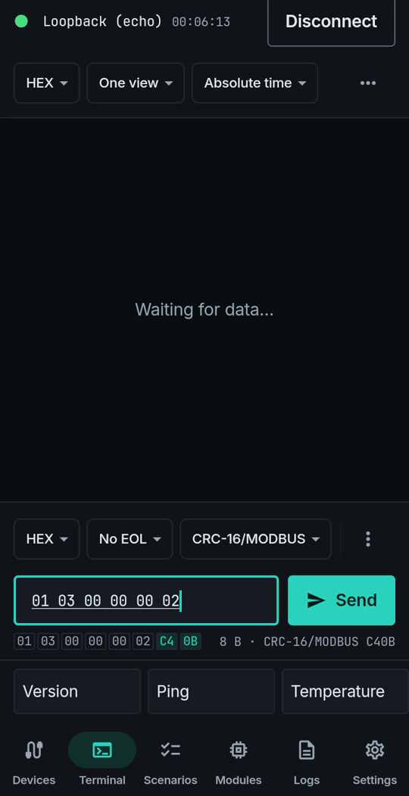

Modbus CRC added for you, on your phone
A Modbus RTU frame ends with a two-byte CRC. Working it out by hand, or in a separate calculator, is slow and easy to get wrong. LinkJig appends it while you type and shows the bytes before you send.
This is a real session on LinkJig's built-in loopback device, which echoes back whatever you send. It works the same on any serial, Bluetooth or TCP link.
Append the checksum
- In the terminal, set the send bar to HEX.
- Open the checksum menu next to it (it says No checksum) and pick CRC-16/MODBUS.
- Type your frame. For "read two holding registers from address 0 of device 1" that is
01 03 00 00 00 02. - Below the field, the full frame appears with the two check bytes highlighted:
C4 0B. Tap Send.

What went out and what came back:
20:48:34.264 TX 01 03 00 00 00 02 C4 0B
20:48:34.295 RX 01 03 00 00 00 02 C4 0BOther checksums
The same menu has SUM8, XOR8, CRC-8, CRC-16/MODBUS, CRC-16/CCITT-FALSE and CRC-32. The checksum is added to the data only; a line ending, if you choose one, goes after it.
Limits
- Shown on the built-in loopback device, not on a real Modbus device.
- CRC-16/MODBUS is sent low byte first, as Modbus RTU expects.
Try it
Watch the demo on YouTube. LinkJig is on Google Play and the Microsoft Store.